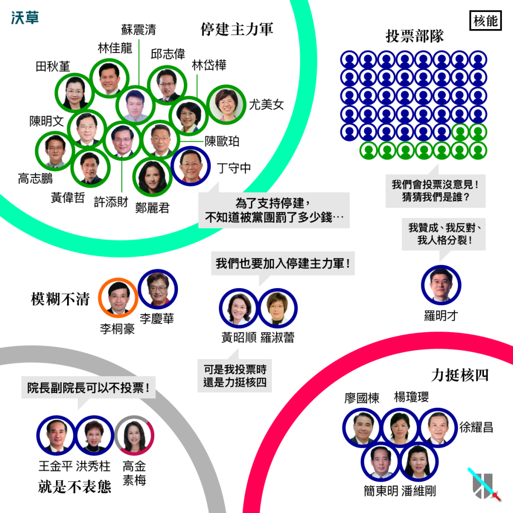

「沒有核安，就沒有核電？」七種立委的表態路數讓你一次摸透
文：王希（沃草｜立委出任務 專案經理）
核四工程興建案，是台灣史上最具爭議的公共工程，耗費2,838億元的預算，卻一度停工再復工，最終在2014年4月27日宣布封存停工。
這個工程引發社會各界激辯，從核四的工程品質、核廢料貯存問題、核一二三是否延役到經濟發展、核能綠能之間的取捨等等，都是各種熱議話題。
然而，封存並非終點。
台電主張「為未來的能源，保留選擇機會」，提出封存三年而非直接停建的計畫，意謂著2018年又將面對核四存廢問題。即使「2025非核家園」是朱立倫與蔡英文同時提出的主張，但具體要如何達成，也需要國會在相關法案的推動。
過去在立法院內又是怎麼討論這個議題呢？到底各政黨和立委，如何表態？誰贊成停建，誰又反對停建？讓阿草用數據告訴你：核四在立法院第八屆任期中，所創下的三大「歷史之最」（點這裡看更多）！
立委角色最複雜
因為核四這個議題牽涉的問題層面實在太廣，相比其他議題，每位立委的行為模式更多元複雜。經過分析，我們發現全體立委可以分成以下幾個類型：
Photo Credit: 沃草
-
停建代言人型
-
按照表態次數，以下這13人堪稱停建代言人（括號內為表態次數，由高到低排列）：
田秋堇（27）、林佳龍（21）、蘇震清（21）、丁守中（21）、邱志偉（20）、陳明文（20）、許添財（20）、陳歐珀（20）、林岱樺（19）、高志鵬（19）、黃偉哲（19）、鄭麗君（18）、尤美女（18）
這13人往往十分積極，在各種機會表達對核四的看法，而且幾乎不只反對核四，更是反對核能，這其中以田秋堇為最具代表性。丁守中則是唯一非民進黨的特例，關於他的狀況，會在後面詳細說明。
黃偉哲則是另一個特殊的狀況，他的19筆紀錄中，有6筆模糊，這個比例是所有贊成停建的立委中最高的。黃偉哲主要贊成停建的表態都是透過表決，而不是發言。
再仔細分析，會發現黃偉哲的發言主要都是模糊的，到底為什麼他發言時都不會直接表現出停建核四的態度呢？這是另一個值得再深入思考的問題。
-
按照表態次數，以下這13人堪稱停建代言人（括號內為表態次數，由高到低排列）：
- 力挺核四型
- 模糊不清型
-
立場轉變型
-
我們發現全部立委中有三人公開發言，表明自己改變立場成為贊成停建核四：
丁守中（21）、黃昭順（19）、羅淑蕾（14）
前面說明過，黃昭順是個心口不一的擁核派，雖然嘴巴上說贊成停建核四，但是表決時卻一直都是投下反對票，從來沒有改變過立場。
羅淑蕾則和李慶華類似，原先在表決上的立場為反對停建核四；但到2014年5月7日（總統馬英九宣布核四封存）大局底定後，便在發言和表決上改變立場。
丁守中是唯一不是因為總統馬英九宣布「核四封存」，就自行改變立場，並在爭論不斷時就以表決違抗黨意的立委。他從2013年就開始正式表態反對核四，甚至在2014年3月10日發言：
「我從2011年開始反核四，為了這件事情，我在黨團的投票裡面，不知道被罰了多少錢⋯」不只表態反對核四，更揭露為此受黨紀罰款的事。在表決上也從2012年開始就投過贊成停建票，因此成為贊成停建方中，唯一的國民黨立委。
-
我們發現全部立委中有三人公開發言，表明自己改變立場成為贊成停建核四：
-
投票部隊型
-
前四種類型的立委，是這個議題舉足輕重的人物。接下來這種類型很特別，對議題幾乎沒有什麼發言，但是表決時會出現按鈴投票，有如人體橡皮圖章，只有投票的功用，看不出真正的想法，這樣的立委可以被稱為「投票部隊」。
由於有12次表決，每位立委至少應該有12次表態紀錄。我們計算表態紀錄在12或13次的立委（只有表決，很少發言說明看法），民進黨有9位，約占民進黨總人數的四分之一；國民黨則高達38位，超過國民黨總人數的一半！這裡因為人數眾多，就不逐一列名，對這個議題有興趣的選民，可以好好看看到底是哪些立委，得了這種不太喜歡說話的病。
-
前四種類型的立委，是這個議題舉足輕重的人物。接下來這種類型很特別，對議題幾乎沒有什麼發言，但是表決時會出現按鈴投票，有如人體橡皮圖章，只有投票的功用，看不出真正的想法，這樣的立委可以被稱為「投票部隊」。
- 不去投票型
-
人格分裂型
-
最後特別要介紹的是，羅明才的行為模式也是類似表決部隊，從來不發言說出他的看法，我們也只能從他的表決紀錄推論。但他不同於一般表決部隊只會投一種立場，而是分別投贊成4次 / 沒投票5次 / 反對3次。
也就是說，羅委員內心中彷彿有三個立場的人，每次投票時就天人交戰，堪稱最糾結的人格分裂型，也讓選民永遠無法得知羅委員的真實想法。
-
最後特別要介紹的是，羅明才的行為模式也是類似表決部隊，從來不發言說出他的看法，我們也只能從他的表決紀錄推論。但他不同於一般表決部隊只會投一種立場，而是分別投贊成4次 / 沒投票5次 / 反對3次。
最多立委參戰、最多次表態
核四因為爭議不斷，經常成為各黨立委發言焦點，也變成全體表決大戰。核四在第八屆立院中總共進行12次表決（請記得這個數字，很重要！），因此除了2015年2月立委補選的五位立委之外，幾乎每位立委都對核四表態過，這造就核四成為最多立委參戰的議題。
因為有這12次表決，幾乎每位立委都對核四至少會有12次的表態紀錄，因此有高達1,341次的表決次數！再加上其他發言和提案，整個核四總計1,632次的表態紀錄！這是公投的11倍、罷免的16倍，甚至是婚姻平權的34倍之多！
由此可知，核四可說是第八屆立院中表態紀錄最多、最完整的議題。
透過核四的表態結果，分析各政黨在整個立院中的輪廓，也會發現十分接近社會大眾對立院的想像。民進黨和台聯都有90%左右站在停建核四的立場，國民黨則有74%反對停建，親民黨則一如以往在國民黨和民進黨之間擺盪，一半贊成、一半模糊。

Photo Credit: 沃草
值得注意的是，國民黨內也有一部分模糊、甚至是贊成停建的表現，這是否可以推論為國民黨的整體反對態勢，其實已有鬆動現象？甚至這可能是後來核四封存決議的原因嗎？這值得進一步分析實際表態內容。
另外，徐欣瑩在國民黨黨籍時，整體表態都偏向反對停建核四。那麼在2015年她另外籌組民國黨以後，她的想法是否就代表民國黨的立場呢？關心核能問題的朋友別忘了瞭解徐欣瑩立委對核四的態度。
最常提到的話：沒有核安，就沒有核電
在整個核四的討論過程中，最常被指出的一個爭論就是核安，尤其是核四本身的工程安全問題。贊成停建的論述中，多數都是以實際案例指出核四本身不安全的問題，也有部分直接論述核能就是不安全的能源，例如：
「核四從招標到興建發生的索賄案件高達44件，我們能祈求核四安全嗎？再者，核四由統包變成分包、監察院對核四提出1,500項變更設計的糾正、原能會也提出核四廠變更700項核安設計，我們能夠祈求核四安全嗎？」
相對而言，反對停建方對於核安的論述，卻通常過於簡單，只重複強調「沒有核安，就沒有核能（核電、核四）」，例如：
- 李昆澤
由這些發言可以發現，其實最常說「沒有核安，就沒有核能」的立委，往往會在之後接著提到「不能再爭吵反核四，還是要考慮經濟發展」、「沒有核四就會電價上漲」等等反對停建核四的說法。
所以雖然這些發言看起來立場模糊，但從他們表決上都偏向反對停建核四的投票行為來看，似乎對他們來說「經濟發展」更重要，而「核安」淪為口號。
這樣的情形大量出現在國民黨或親民黨的模糊發言中，成為整個討論過程中最常出現的用語，但對於核四沒有辦法有效辯護，而僅是空洞口號，可能就是社會輿論風向整體偏向不信任核四安全的原因。
了解過去紀錄，慎選新國會立委
由於核四是表態立委最多、表態紀錄最完整的議題，可說是各議題在立院中討論過程的縮影。真正對一個議題比較關心也比較多論述的立委，大概不到全體人數的20%，而在重大爭議的議題上，往往需要更多委員、更頻繁的發言或表態，才能凝聚共識、解決問題。
凝聚社會共識、進而解決問題，需要更多更完整的論述和表態。
以核四為例，即使是贊成停建方的立委頻繁排案討論，並有許多完整的表態發言，甚至發動高達12次的表決，在第八屆中仍然要經過兩年多才能促成封存停工的共識，可見其困難程度。
另一方面，高達一半的立委立場模糊或甚至不發言，也是造成難以凝聚共識而法案停滯的原因之一。
民主政治最重要的是溝通協調、異中求同。許多立委發言模糊，沒有針對問題提出具體建設性的討論，只有「沒有核安，就沒有核能」這類空洞口號的發言，經常導致焦點模糊而無法凝聚共識，也造成時間延宕、浪費立法院寶貴的排案討論機會。
而另一個對議題討論沒有幫助的族群則是「不發言」的立委，贊成或反對的投票往往看不出具體理由，也就無法溝通討論。兩者相加起來甚至高達全體一半的立委人數，可能也是立法院議事效率、法案停滯的原因。
表決很重要，即使沒有通過法案，至少留下表態紀錄，才能監督立院。
相對其他議題，核四最特別的一點，在於在野黨提出大量的表決提案。雖然表決實際上都沒有通過，但至少使前述都不發言的立委留下表態紀錄，才能檢視立院運作的問題。
因此，對於未來任何的國會少數黨來說，除了任何的協商運作外，也許透過公開表決等方式迫使全體立委表態，也是一個可以考慮的手段。
兩大黨都宣示「2025非核家園」的目標，但替代能源、核廢等等整體政策也需要相同理念價值的立委推動完成相關立法，才能具體執行。況且2018年又要面對核四問題，到底能否徹底解決核四問題，走向非核家園？2016所選出的新國會，可說是影響重大。
因此，對選民來說，這些表態紀錄最重要的價值在於，有具體證據說明立委的態度和作為。不論你贊成或反對核四停建，都應該基於這些資訊，選擇符合你價值主張的政黨和立委。台灣能源政策的未來，就在你的選票上。
文章獲沃草授權轉載，詳細表態內容請點入「沃草！立委出任務」
責任編輯：羊正鈺
核稿編輯：楊之瑜
核稿編輯：楊之瑜
SHARE：